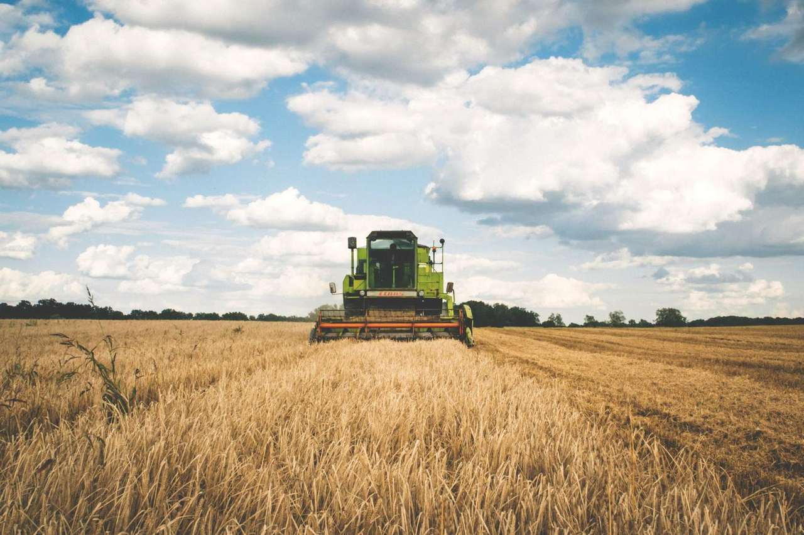
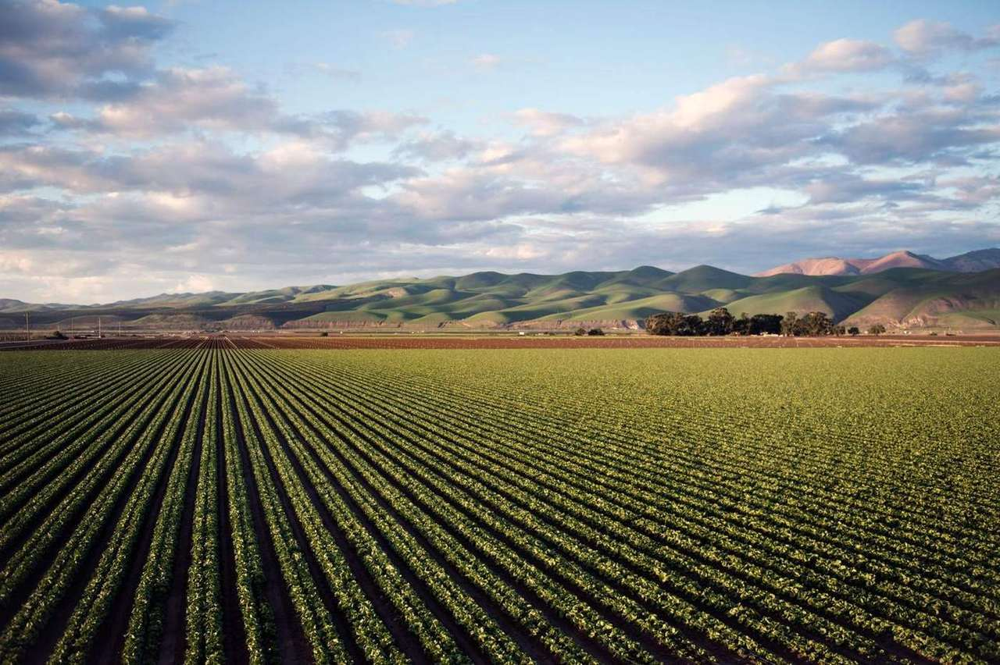

Armazém e cerealista · Sorriso, MT
Seu grão tem lugar.
Recebimento, secagem e guarda no norte do Mato Grosso. Umidade na balança, fila combinada e o número do dia escrito — mesmo quando o número é de demonstração.

Números fictícios para demonstração. Não são cotação de mercado, nem oferta de compra.
Área de recebimento
Onde o caminhão entra.
O que acontece com o grão
Balança e fila
Recebimento com hora combinada na safra.
O caminhão entra com horário. Fila sem hora é como a casa perdia a noite inteira.
- Grãos
- Soja, milho e sorgo
- No pátio
- Amostra, umidade e peso antes de descarregar
- Safra
- Agenda aberta com antecedência para quem já entrega aqui
Classificação
Umidade, impureza e avariado na hora da descarga.
O papel sai junto com o ticket. Discussão de amostra se resolve no laboratório da casa, não no grupo.
- O que mede
- Umidade, impureza, ardido e quebrado
- Grãos
- Soja, milho e sorgo
- Transparência
- O produtor vê o número antes de ir embora
Secagem
Tira umidade sem cozinhar o grão.
Secador dimensionado para a safra cheia. Grão que chega tarde demais na umidade alta espera vaga, e a casa avisa antes.
- Grãos
- Soja e milho
- Capacidade ilustrativa
- 2.400 toneladas por dia
- Cuidado
- Temperatura acompanhada. Grão queimado não sai daqui com o nosso nome
Armazenagem
Guarda com aeração e leitura de temperatura.
O grão fica com endereço de silo. Você sabe onde está, não só que “entrou na casa”.
- Capacidade ilustrativa
- 160 mil toneladas estáticas
- Grãos
- Soja, milho e sorgo
- Leitura
- Temperatura e aeração na rotina da safra
Limpeza
Impureza fora antes de subir no silo.
Soja com terra de mais não mistura com lote limpo. A pré-limpeza é parte do recebimento, não um favor.
- Grão
- Soja
- Quando
- Na entrada, antes da secagem
- Por quê
- Impureza úmida estraga o vizinho de silo
Expedição
Carga para fora com ticket e janela de pátio.
Quando o produtor decide vender ou transferir, a carga sai com hora, peso e classificação de saída.
- Grãos
- Soja, milho e sorgo
- Pátio
- Carregamento com janela, para não travar o recebimento
- Papel
- Ticket de saída no mesmo dia
Nenhum serviço neste filtro.
Número na cara
Umidade e peso antes do caminhão ir embora. Sem “depois a gente manda”.
Fila com hora
Na safra cheia, quem tem agenda não dorme na beira da BR.
Silo com endereço
O grão não some num saldo genérico. Você sabe o silo e a leitura.

A casa
Três irmãos, um pátio, e a regra de não discutir amostra no escuro.
Os Vereda abriram o primeiro silo em 1999, quando Sorriso ainda descarregava em fila que não cabia na estrada. A casa cresceu para o lado da classificação, não só do concreto. Quem entrega aqui volta porque o ticket fecha com o que saiu da lavoura.
Sócia. Cuida da agenda de recebimento na safra.
Classificação. A amostra passa por ele antes do papel.
Secagem. Temperatura e turno da madrugada.
“Descarreguei com hora marcada. Não passei a noite na fila da BR.”
“A umidade do ticket foi a mesma que o meu medidor marcou no caminhão.”
“Sabia em qual silo estava o lote. Quando expedi, saiu o que eu guardei.”
Parceiros fictícios
- Balança da Serra
- Laboratório de Umidade
- Frete BR-163
- Aeração do Cerrado
- Saco e Lona Norte
- Classificação Vereda
Antes de sair com o caminhão
Não. Os números são fictícios, feitos para mostrar como um quadro fica no site. Preço de compra se combina no dia, com classificação real.
Na safra cheia, sim. Fora do pico, o pátio recebe por ordem, ainda com amostra e peso.
Recebem, com silo separado. Não mistura com soja.
Acima do padrão o grão seca, e o desconto de peso segue a tabela da casa, mostrada antes da descarga.
A casa carrega e documenta a saída. O frete longo é do contratante. A gente não finge ser trading.
Seu armazém com quadro, mapa e ticket claro.
Demonstração fictícia. A prévia do seu cerealista pode ter a cotação de verdade no lugar destes números.
Quero uma prévia do meu site